▲ 구룡포 일본인 가옥거리 골목. 촬영 시기는 자료에 없다 ⓒ 한국관광공사 · 공공누리 제1유형
"구룡포 일본인 가옥거리 갔는데 근대역사관이 닫혀 있으면 어쩌지? 과메기는 11월부터라던데 지금 가도 되나?" 이 글은 2026년 10월 21일 기준으로 포항시 관광 누리집과 한국관광공사 자료, 지역 언론 보도를 맞춰 보며 구룡포 일본인 가옥거리와 호미곶 연계 코스, 과메기 철, 주차·운영 정보를 정리했다. 가장 먼저 알아둘 것은 거리 자체는 상시 개방이지만 안쪽의 구룡포근대역사관은 포항시 안내상 "2026년 11월까지 휴관"이라는 점이다. 포항시 가옥거리 안내 바로가기
구룡포는 호미곶에서 감포 방향으로 이어지는 해안 경로 위의 항구다. 과메기 덕장, 일제강점기 일본인 집단 거주지의 흔적, 해안 주상절리가 한 마을에 모여 있어 반나절 코스로 묶기 좋다. 다만 운영 정보가 곳곳에서 어긋나므로 확인한 것과 확인하지 못한 것을 나눠 적었다.
💡 먼저 결론
가옥거리는 한국관광공사 정보상 상시 개방·연중무휴이고 주차 가능으로 안내된다. 근대역사관은 포항시 누리집이 "10:00~17:30, ※2026년 11월까지 휴관"으로 안내해 지금은 내부 관람이 어려울 수 있다. 과메기는 한국관광공사 기준 제철이 11월 말~2월이다. 2025년에는 10월 20일에 첫 출하가 있었고, 2026년은 포항시 발표를 전한 보도(2026-10-21)에 "이달 말부터 본격 출하 예정"이라고만 나와 구체적인 첫 출하일은 확인하지 못했다.
1. 먼저 바로잡기 — 거리는 열려 있고, 역사관은 휴관이다
구룡포 일본인 가옥거리는 1883년 조일통상장정 이후 일본인이 건너와 살던 곳으로, 한국관광공사 개요는 일본인 어부들이 정착해 조선인의 어업권을 수탈한 아픈 역사의 현장이기도 하다고 설명한다. 현재 일본식 목조 건물 47개가 남아 있고 2010년 포항시가 "역사를 기억하는 산 교육장"으로 거리를 조성했다. 구룡포라는 이름은 아홉 마리의 용이 승천한 포구라는 데서 왔다고 포항시는 소개한다.
혼동하기 쉬운 것은 "거리"와 "근대문화역사관"이다. 거리는 골목 자체가 상시 개방이지만, 하시모토 젠기치의 살림집을 복원한 근대역사관은 별도 운영 시설이다. 포항시 퐝퐝여행의 가옥거리 페이지는 이용시간 칸에 "[구룡포근대역사관] 10:00~17:30 ※2026년 11월까지 휴관"이라고 적고 있다. 포항시 안내 확인하기
▲ 일본식 목조 건물이 이어지는 가옥거리 골목. 촬영 시기는 자료에 없다. ⓒ 한국관광공사 · 공공누리 제1유형
| 항목 | 확인한 내용 | 근거 |
|---|---|---|
| 가옥거리(골목) | 상시 개방, 연중무휴, 주차 가능. 주소 구룡포읍 호미로 277 | 한국관광공사 정보 |
| 구룡포근대역사관 | 10:00~17:30, "2026년 11월까지 휴관" 안내. 문의 054-276-9605 | 포항시 퐝퐝여행 |
| 역사관 입장료·휴관일 | 한국관광공사 정보(2026-09-16 수정)는 무료·매주 월요일 휴관(입장 마감 17:20)이지만 위 휴관 안내와 어긋남. 포항시 문화유산 안내 페이지(2022-11-21 갱신)는 10:00~17:30(마지막 입장 17:00)으로 적어 입장 마감도 17:20과 17:00으로 갈린다. 재개관일은 확인하지 못함 | 한국관광공사·포항시 |
| 가옥 수 | 일본식 목조 건물 47개 잔존 | 한국관광공사 개요 |
| 야간 미디어아트(피어라 계단) | 금~일 19:00~20:50, 월~목 휴무, 내부 사정에 따라 변경 | 한국관광공사 정보 |
두 기관의 정보가 다를 때는 포항시 누리집의 휴관 문구를 우선하되, 방문 전 054-276-9605로 재개관 여부를 확인하는 편이 안전하다. 한국관광공사 정보는 갱신 시점이 다를 수 있다. 참고로 "11월까지 휴관" 문구는 포항시 가옥거리 안내 페이지에만 있었고, 시의 근대문화역사관 개별 안내 페이지와 관광공사 정보에는 휴관 언급이 없었다. 불일치의 원인은 공식 자료에 설명이 없어 확인하지 못했다.
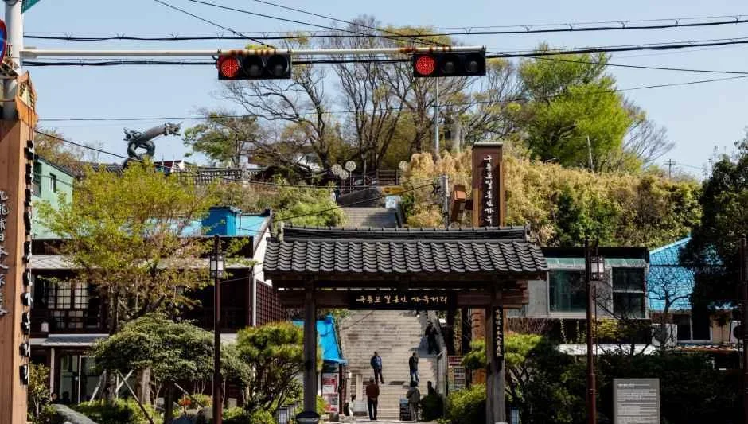
▲ 가옥거리 입구 쪽 길과 계단. 사진 설명에 정확한 지점은 없다. ⓒ 한국관광공사 · 공공누리 제1유형
2. 골목과 구룡포공원 계단 — 걷는 순서
한국관광공사 여행기사는 구룡포우체국을 돌아 들어가는 작은 골목으로 진입해, 골목 중반부에서 구룡포공원으로 오르는 계단이 이어진다고 소개한다. 건물마다 옛 용도를 알려 주는 흑백사진이 걸려 있다. 포항시의 소개문은 일제강점기 일본인 거류지였던 구룡포 읍내 장안동 골목이 영화 속 한 장면처럼 일본풍을 간직하고 있으며, 과거 '여명의 눈동자'의 일본 거리 촬영 세트로 쓰였다고 적는다. 한국관광공사 골목여행 기사 바로가기
| 항목 | 확인한 내용 | 근거 |
|---|---|---|
| 계단 성격 | 가옥 뒤편 공원으로 오르는 가파른 돌계단 | 포항시 소개문 |
| 계단 양쪽 비석 | 일본인 이름이 새겨졌던 비석 위에 시멘트를 바르고 뒤집어 구룡포 유공자 이름을 새겼다고 소개됨 | 포항시·한국관광공사 |
| 공원 안 | 선원 무사고를 빌던 용왕당, 충혼각·충혼탑, 일본 신사가 있던 터 | 포항시·한국관광공사 |
| 전망 | 구룡포항이 한눈에 내려다보인다. 관광공사는 공원 계단에서 내려다보는 어촌 풍경이 대한민국 경관대상 최우수상을 받았다고 소개 | 한국관광공사 |
| 계단 수 | 공식 자료에서 단수를 확인하지 못함 | - |
표에서 확실한 것은 가파른 돌계단과 항구 전망뿐이고, 계단 수는 공식 자료가 없어 비워 두었다. 비석 이야기는 포항시와 한국관광공사의 소개에 근거한 것이다.
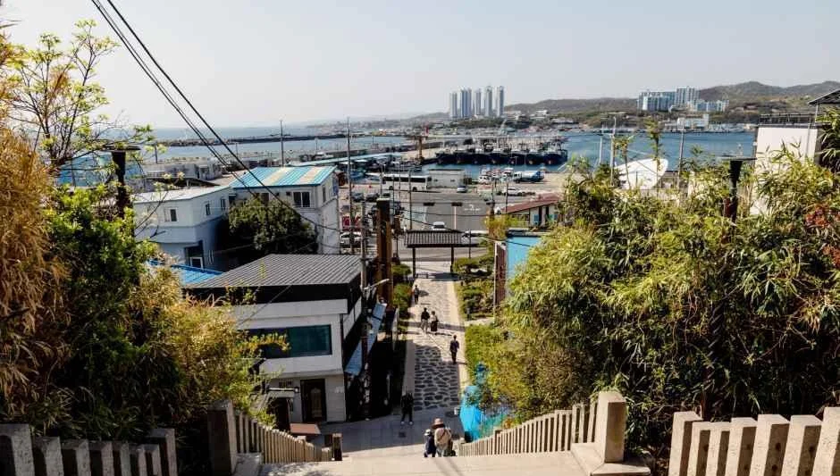
▲ 골목에서 항구 쪽으로 내려다본 계단. 촬영 시기는 자료에 없다. ⓒ 한국관광공사 · 공공누리 제1유형
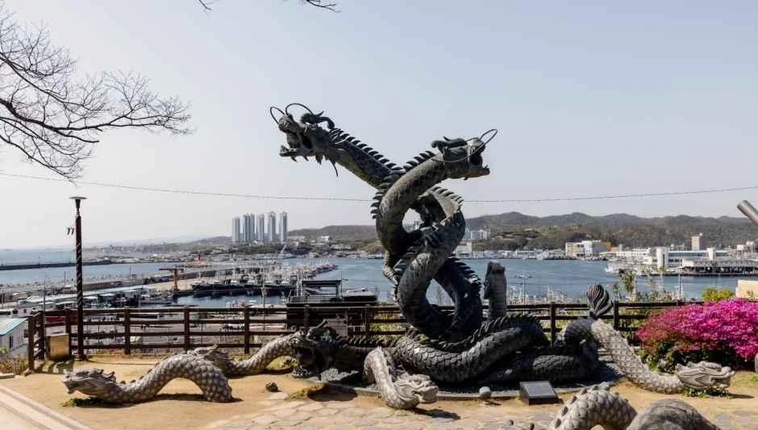
▲ 항구를 배경으로 한 용 조형물. 가옥거리 사진 묶음에 포함된 장면이며 정확한 지점은 사진 설명에 없다. ⓒ 한국관광공사 · 공공누리 제1유형
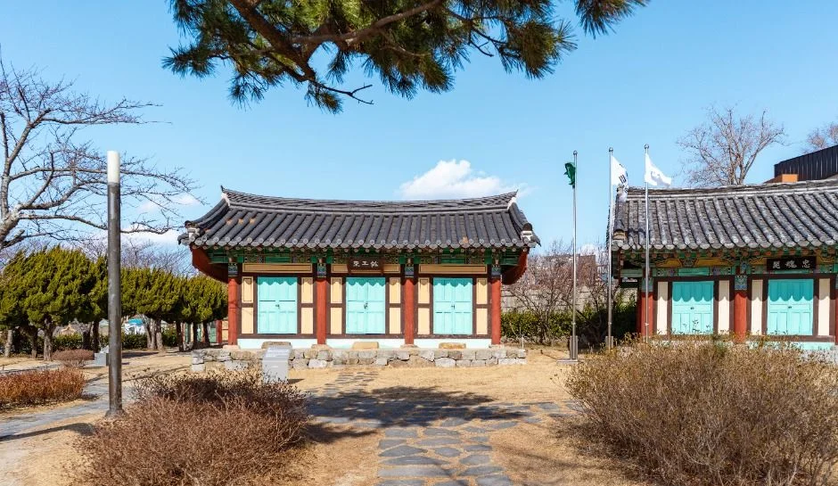
▲ 구룡포공원 일대로 소개되는 전통 양식 건물. 정확한 명칭과 위치는 사진 설명에 없다. ⓒ 한국관광공사 · 공공누리 제1유형
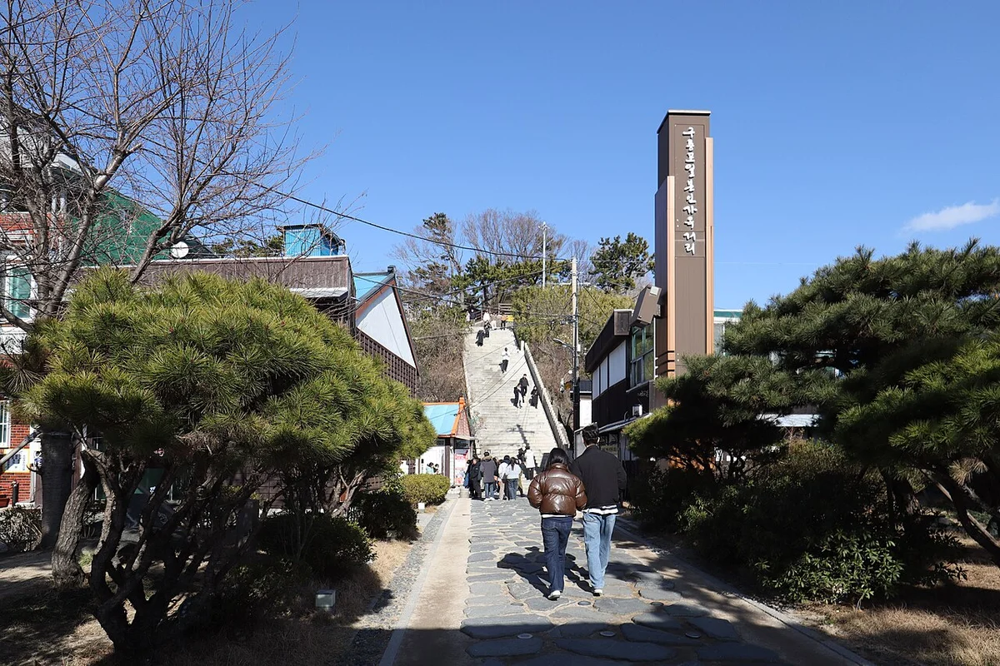
▲ 구룡포공원 쪽으로 이어지는 계단 일대. 2024년 1월 13일 촬영. ⓒ Mobius6 · CC BY 4.0 (Wikimedia Commons) · 촬영 2024-01-13
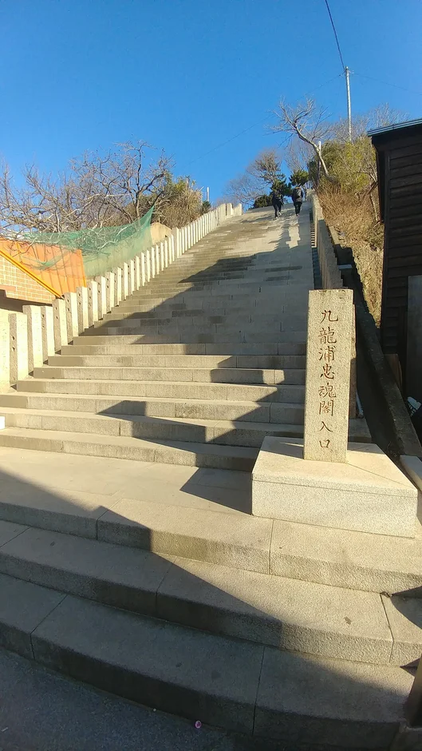
▲ 가옥 뒤편 공원으로 오르는 돌계단. 2017년 2월 16일 촬영, 계단의 가파른 정도를 가늠할 수 있다. ⓒ Altostratus · CC BY-SA 4.0 (Wikimedia Commons) · 촬영 2017-02-16
가파른 돌계단이라 굽이 높은 신발이나 유모차는 불편할 수 있다. 계단 폭·경사나 난간 구간은 공식 자료가 없어 적지 않는다. 비가 온 날 돌계단 미끄러움은 일반적인 주의 사항일 뿐 공식 안내는 아니다.
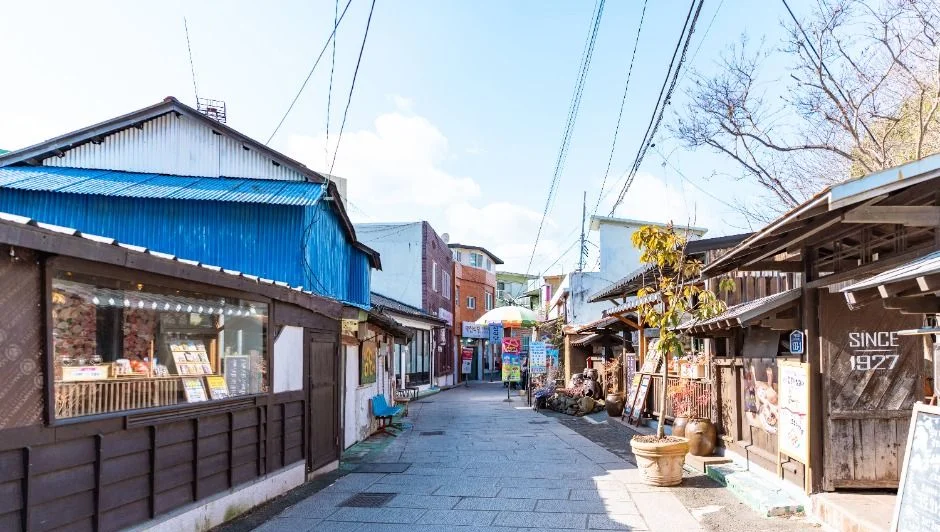
▲ 포장된 골목과 일본식 목조 건물이 이어지는 구간. 촬영 시기는 자료에 없다. ⓒ 한국관광공사 · 공공누리 제1유형
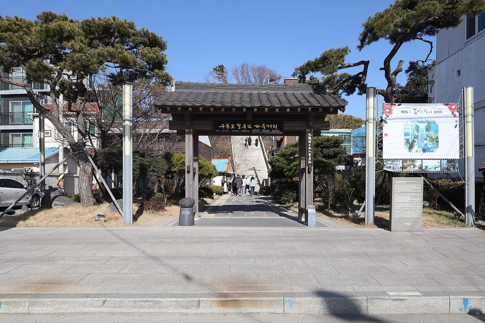
▲ 구룡포공원으로 오르는 계단 입구의 기와 문. 2024년 1월 13일 촬영, 나뭇가지에 잎이 거의 없는 겨울 모습이다. ⓒ Mobius6 · CC BY 4.0 (Wikimedia Commons) · 촬영 2024-01-13
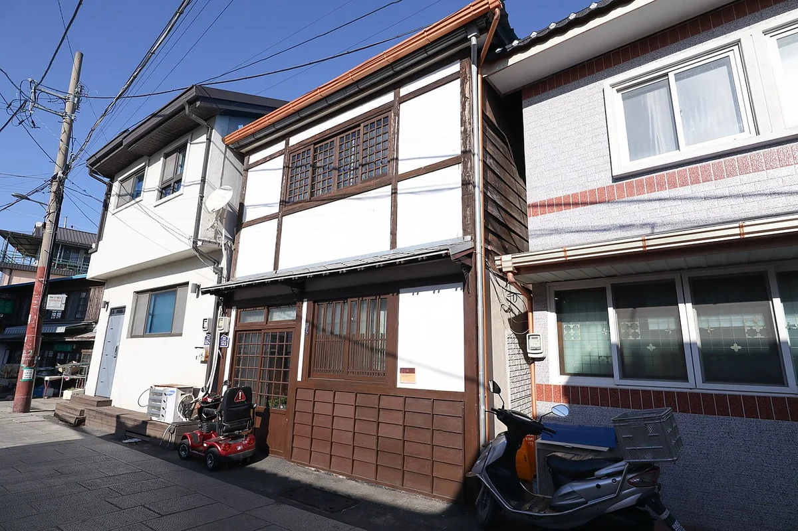
▲ 가옥거리 골목의 일본식 2층 가옥. 2024년 1월 13일 촬영. ⓒ Mobius6 · CC BY 4.0 (Wikimedia Commons) · 촬영 2024-01-13
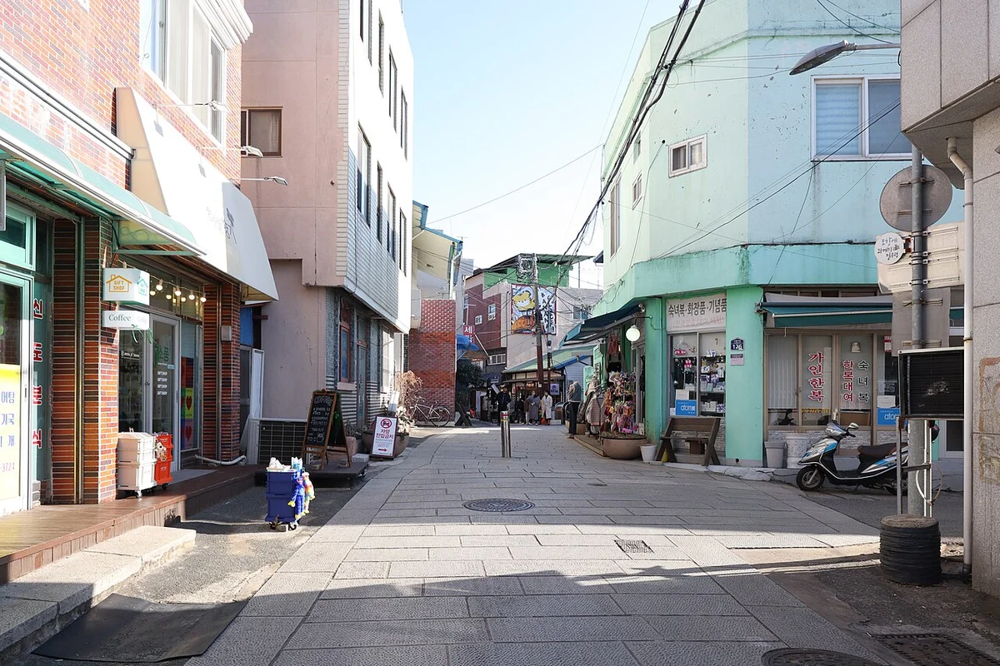
▲ 가옥거리와 이어지는 골목 풍경. 2024년 1월 13일 촬영, 한낮 햇빛이 길게 든다. ⓒ Mobius6 · CC BY 4.0 (Wikimedia Commons) · 촬영 2024-01-13
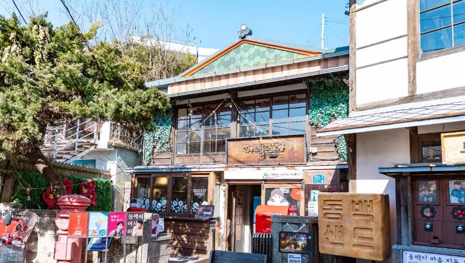
▲ 우체통과 가게 간판이 보이는 골목 모퉁이. 건물의 현재 용도는 사진 설명에 없다. ⓒ 한국관광공사 · 공공누리 제1유형
3. 야간 피어라 계단 미디어아트 — 금~일 저녁만
한국관광공사 정보에 따르면 가옥거리 중앙계단(피어라 계단)에는 미디어아트 상영이 있다. 계단이라는 공간에 아나모픽 기법을 적용했고, 바닥에도 영상을 투사하며 음향 효과를 더한다. 4개 주제(포항의 바다와 일출, 포항 철강산업, 계곡, 동심)로 구성되며 한 번 상영에 약 10분이 걸린다.
| 항목 | 내용 |
|---|---|
| 운영 | 금~일 19:00~20:50, 월~목 휴무 |
| 유의 | 내부 사정에 따라 시간 변경 가능 |
| 주차 | 가능(약 74대) |
| 문의 | 054-289-7920 |
상영은 금~일 19:00~20:50에만 열리고 월~목은 쉬므로 요일을 잘못 잡으면 볼 수 없다. 내부 사정으로 시간이 바뀔 수 있다고 안내돼 있어 문의 번호로 확인하는 편이 안전하다.
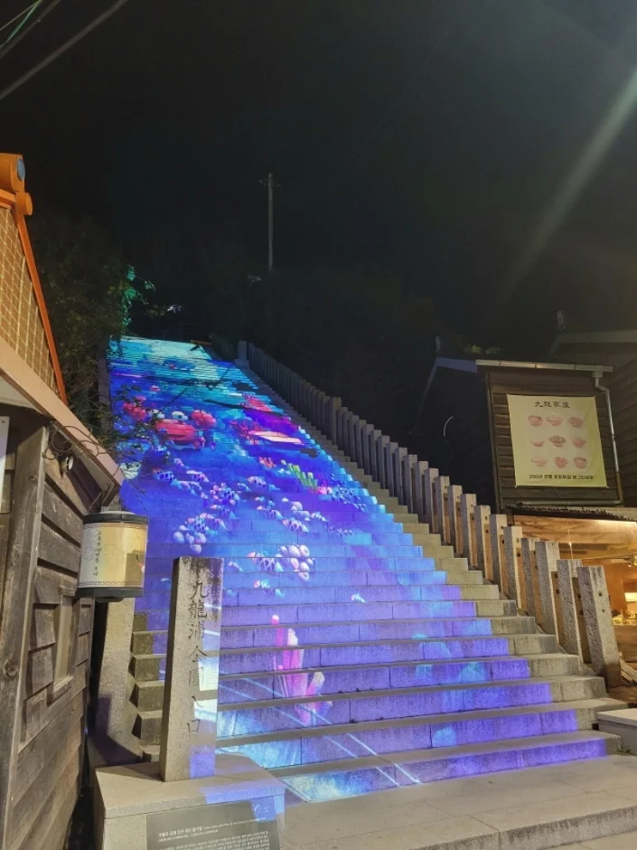
▲ 밤 계단에 영상이 투사된 장면. 촬영 시기는 자료에 없다. ⓒ 한국관광공사 · 공공누리 제3유형(변경금지)
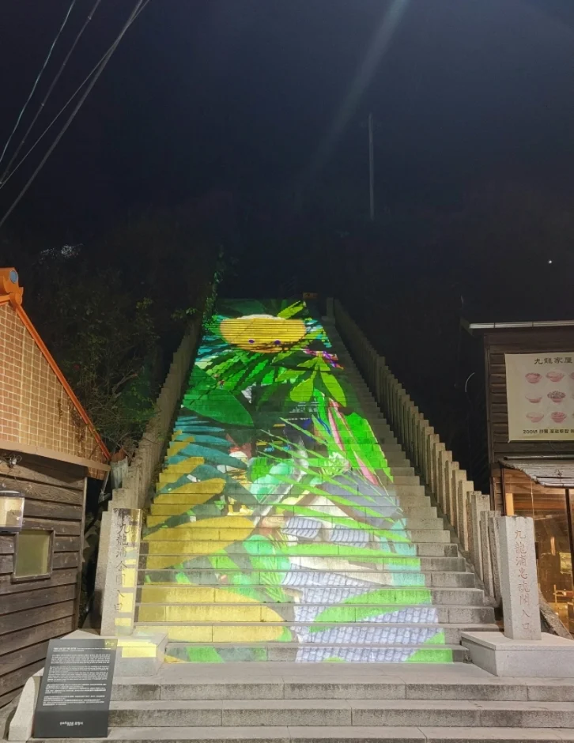
▲ 같은 계단에 다른 영상이 투사된 장면. 상영 주제와의 대응은 사진 설명에 없다. ⓒ 한국관광공사 · 공공누리 제3유형(변경금지)
이 정보는 한국관광공사 데이터 기준이라 상영 중단·변경 여부는 확인하지 못했다. 해가 진 뒤 돌계단을 오르내리게 되므로 발밑 조명 상황은 현장에서 확인하자.
4. 근대역사관 — 휴관 중이어도 알아둘 것
근대역사관은 1920년대 가가와현 출신 하시모토 젠기치가 지은 2층 일본식 목조 살림집이다. 그는 구룡포에서 선어운반업으로 성공한 인물로, 일본에서 건축 자재를 직접 들여와 지었다고 전해진다. 일가가 일본으로 돌아간 뒤 오랫동안 한국인이 거주하다 2010년 포항시가 매입해 복원 공사를 마치고 역사관으로 개관했다. 부츠단, 고다츠, 란마, 후스마, 도코노마 같은 내부 구조가 남아 있으며 2층은 가옥거리 홍보관으로 쓴다. 포항시 근대문화역사관 안내 바로가기
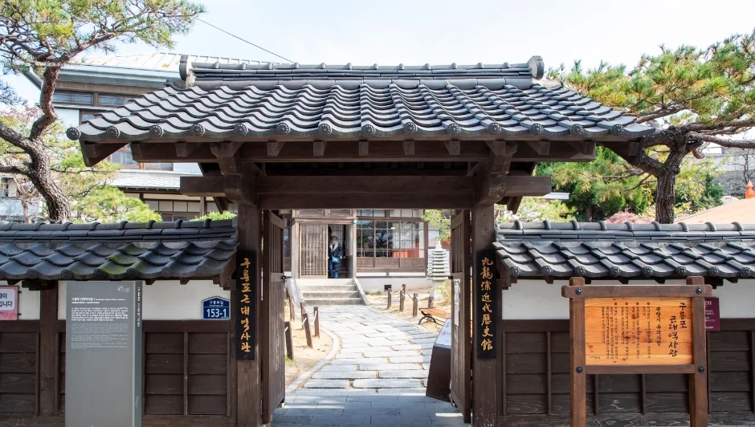
▲ 근대문화역사관 입구 쪽 문. 한국관광공사 근대문화역사관 자료 사진이며 촬영 시기는 알 수 없다. ⓒ 한국관광공사 · 공공누리 제1유형
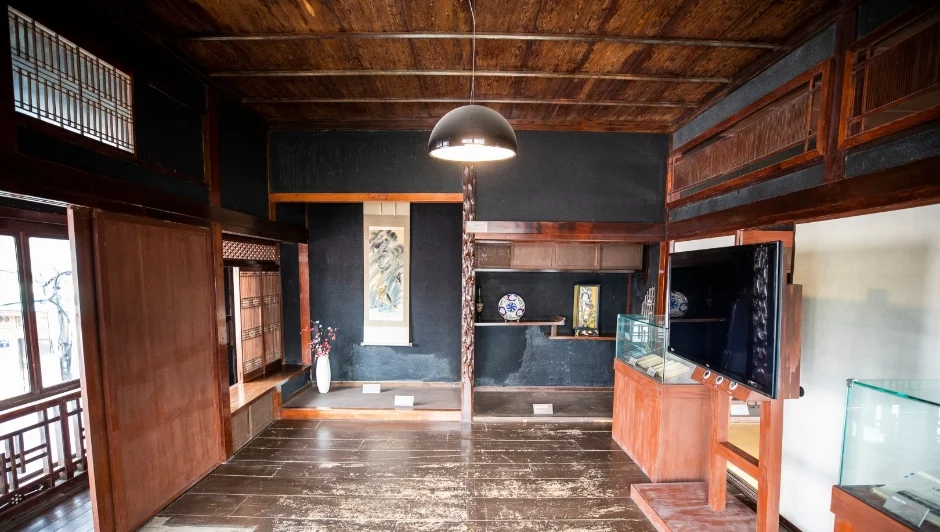
▲ 일본식 가옥 내부 공간. 한국관광공사 자료 사진이며 촬영 시기는 자료에 없다. ⓒ 한국관광공사 · 공공누리 제1유형
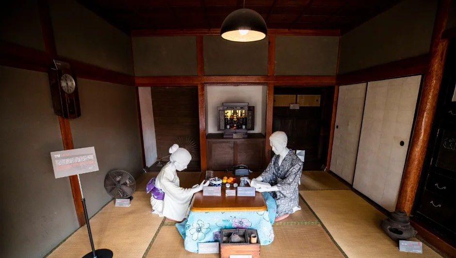
▲ 일본식 가옥 방 안의 생활상 전시. 한국관광공사 근대문화역사관 자료 사진이며 촬영 시기는 자료에 없다. ⓒ 한국관광공사 · 공공누리 제1유형
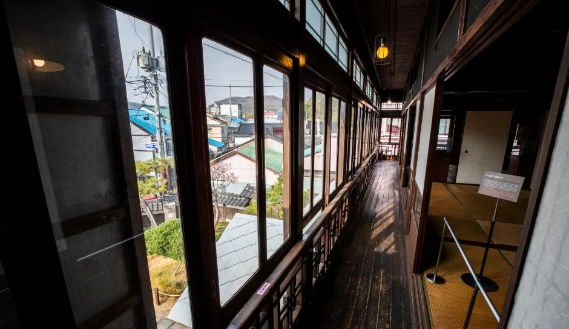
▲ 일본식 가옥 내부의 목조 복도. 촬영 시기는 자료에 없다. ⓒ 한국관광공사 · 공공누리 제1유형
2026년 11월까지 휴관이라는 문구 때문에 내부는 현재 직접 볼 수 없을 수 있다. 휴관 중이라면 골목과 공원 계단, 과메기문화관을 중심으로 일정을 짜는 쪽이 현실적이다. 재개관일과 휴관 사유는 이번에도 공식 자료에서 확인하지 못했다.
2026년 10월 21일에 포항시 가옥거리 안내와 근대문화역사관 개별 안내 페이지, 지역 언론 검색을 다시 확인했지만 휴관 사유·재개관일을 밝힌 포항시(문화예술과)·구룡포읍 공고는 찾지 못했다. 비공식 지도 앱 후기에는 보수·보강 공사 때문이라는 글이 있으나 기간을 "9월 말"로 적어 포항시의 "11월까지"와 달라 근거로 쓰지 않는다. 방문 전 054-276-9605로 재개관 여부를 묻는 수밖에 없다.
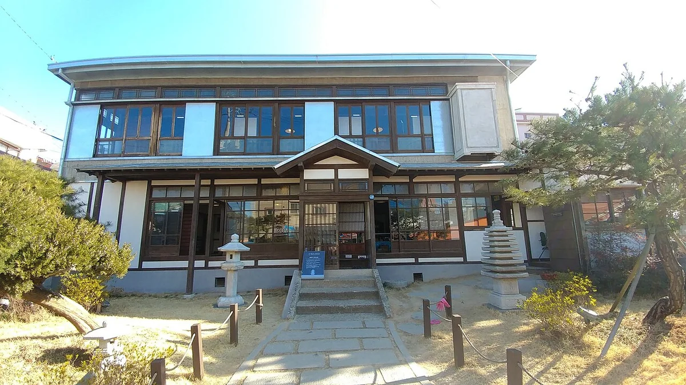
▲ 구룡포 근대역사관 외관. 2017년 2월 16일 촬영이라 지금의 휴관·정비 상태와는 무관한 과거 모습이다. ⓒ Altostratus · CC BY-SA 4.0 (Wikimedia Commons) · 촬영 2017-02-16
✅ 출발 전 체크
1) 근대역사관 재개관 여부 054-276-9605 확인 2) 야간 미디어아트는 금~일 19:00~20:50, 054-289-7920 3) 공영주차장은 포항시 안내로 현재 요금 확인 4) 과메기는 올해 "이달 말 본격 출하 예정"이라는 보도만 있어 첫 출하 여부는 구룡포 현장에서 확인 5) 계단 단수·경사는 공식 수치 없음.
5. 주차·교통 — 확인된 것과 확인 못한 것
한국관광공사 정보는 가옥거리 주차를 "가능"으로만 적고 주차면 수와 요금은 없다. 포항시 구룡포항 안내 페이지에도 항구 전용 주차 정보가 없고, 공영주차장은 별도 안내 메뉴(실시간 주차 목록·요금 안내)를 통해 확인하라는 구조다. 이 글에서는 특정 주차장의 요금과 대수를 적지 않는다. 포항시 공영주차장 안내 바로가기
| 항목 | 확인 내용 | 미확인 |
|---|---|---|
| 가옥거리 | 주차 가능(한국관광공사) | 위치·면수·요금 |
| 구룡포과메기문화관 | 주차 무료(한국관광공사 정보) | 면수 |
| 구룡포 주상절리 | 주차 가능, 상시 개방 | 면수·요금 |
| 피어라 계단 일대 | 주차 가능 약 74대(한국관광공사) | 요금 |
| 대중교통 | 포항터미널에서 200, 200-1번 버스, 구룡포 하차(포항시 안내) | 배차·소요시간 |
주말이나 축제 기간에는 혼잡할 수 있지만 공식 통계는 없다. 해안도로 운전과 연계 코스는 영덕 블루로드에서 호미곶까지 해안 드라이브 기사에도 정리돼 있다.
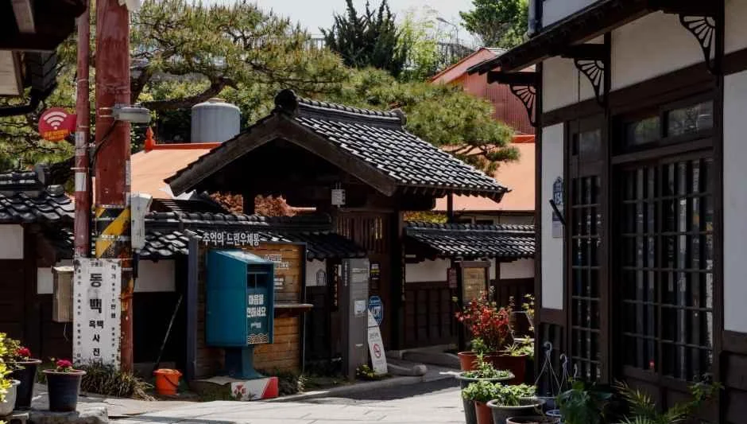
▲ 일본식 지붕 문과 우체통이 있는 골목 모퉁이. 촬영 시기는 자료에 없다. ⓒ 한국관광공사 · 공공누리 제1유형
6. 과메기 — 11월부터가 아니라 10월 하순부터?
한국관광공사 여행기사는 구룡포 과메기 제철을 11월 말부터 2월까지로 설명하며, 차가운 북서풍과 바닷바람이 교차해 건조 조건이 좋다고 적는다. 그런데 경북매일은 2025년 구룡포 햇과메기가 10월 20일에 첫 출하됐다고 보도했다. 그해에는 꽁치 어획이 40% 넘게 늘어 한 두름(20마리) 가격이 23,000원으로 전년보다 2,000원 낮았다는 내용이다. 경북매일 2025년 보도 바로가기
2026년은 박용선 포항시장이 10월 16일 구룡포 과메기 가공시설을 찾아 원료 수급과 출하 준비를 점검했다고 경북매일이 전했다. 기사에 따르면 올해는 원양산 꽁치 어획이 부진해 포항시가 대만산 꽁치 수입선을 확보하기로 했고, 2025~2026 생산기간 생산량은 3,206t, 판매금액은 915억 원으로 전년 대비 각각 50.7%, 19.1% 늘었다.
구룡포과메기사업협동조합 등록 생산·가공업체는 156곳이다. 다만 올해 첫 출하일은 이 기사에 없다.
같은 포항시 발표를 전한 뉴스1과 직지 보도(2026-10-16~21)는 올해 꽁치 과메기가 이달 말부터 본격 출하될 예정이라고만 적어, 2026-10-21 현재 "첫 출하" 자체가 이뤄졌는지는 확인하지 못했다. 경북매일 2026년 보도 바로가기
| 항목 | 확인한 내용 | 근거 |
|---|---|---|
| 제철 | 11월 말~2월 | 한국관광공사 여행기사 |
| 2025년 첫 출하 | 10월 20일, 두름(20마리) 23,000원 | 경북매일 2025-10-27 |
| 2026년 점검 | 10월 16일 시장 점검, 출하 앞둠. 올해 첫 출하일은 확인 못함 | 경북매일 2026-10-19 |
| 2026년 출하 예정 | "올해 꽁치 과메기는 이달(10월) 말부터 본격 출하될 예정"(포항시 발표 보도). 원료 부진으로 일정·물량이 달라질 수 있음 | 직지·뉴스1 2026-10-16~21 |
| 2025~2026 생산 | 3,206t, 915억 원, 업체 156곳 | 경북매일 2026-10-19~20 |
| 올해 가격 | 확인하지 못함 | - |
한국관광공사는 제철을 11월 말부터로 적지만 경북매일은 2025년 10월 20일 첫 출하를 보도해 두 자료가 어긋난다. 2026년은 첫 출하일과 가격이 확인되지 않았으니 표의 제철은 관광공사 설명으로만 읽고, 올해 일정은 현장에서 확인해야 한다.
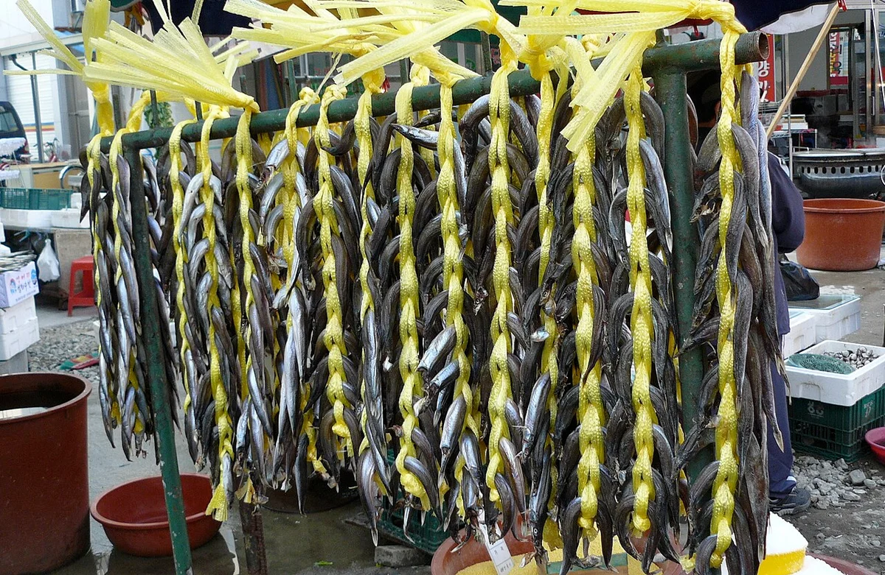
▲ 꽁치를 엮어 매단 모습. 2007년 11월 14일 촬영 Flickr 자료이며 구룡포가 아닐 수 있고 촬영 장소는 자료에 확실히 나오지 않는다. ⓒ david&alina · CC BY-SA 2.0 (Wikimedia Commons) · 촬영 2007-11-14
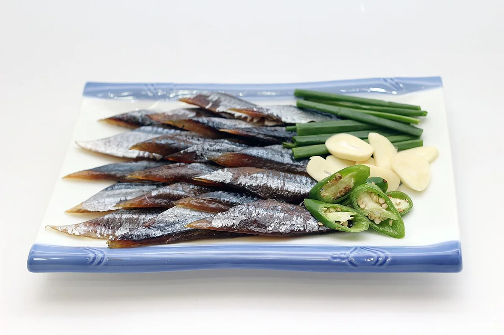
▲ 과메기 상차림 예시. 2013년 12월 13일 촬영, 구룡포에서 찍은 사진인지는 자료에 없다. ⓒ Hyeon-Jeong Suk · CC BY 2.0 (Wikimedia Commons) · 촬영 2013-12-13
정리하면 "과메기는 11월부터"는 절반만 맞다. 제철의 본격 시기는 11월 말이지만, 앞선 해에는 10월 하순에 햇과메기가 나왔다. 올해는 원료 사정 때문에 출하와 가격이 다를 수 있어 현장 확인이 필요하다.
포항시 누리집(과메기 홍보관 안내)은 과메기를 겨울철에 말리는 음식으로 소개하고 구룡포산이 전국 시장의 90% 이상을 차지한다고만 적을 뿐 몇 월이 제철인지는 밝히지 않는다. 포항시 자료에서 과메기 지리적표시 등록 문구도 확인하지 못했다. 그래서 월 단위 제철은 한국관광공사 기사와 지역 언론 보도를 근거로 삼았다.
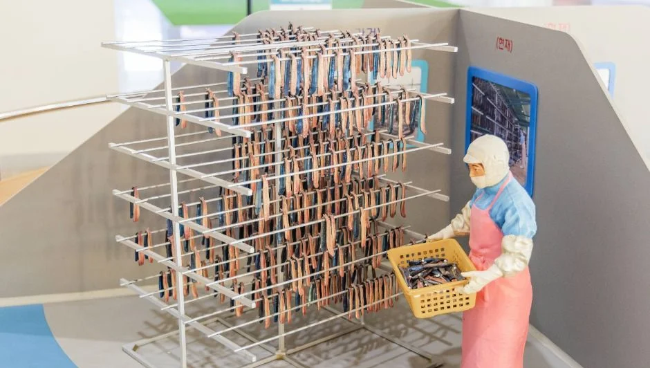
▲ 과메기문화관 전시의 덕장 모형. 실제 덕장 사진이 아니라 전시물이다. ⓒ 한국관광공사 · 공공누리 제1유형
구룡포과메기문화관은 2017년 11월 개관했고, 한국관광공사 정보 기준으로 입장 무료, 주차 무료, 09:00~18:00(입장 마감 17:30)이다. 매주 월요일, 공휴일 다음 날, 1월 1일, 추석 당일에 쉰다. 과메기 홍보관에서는 어원과 유래, 역사, 산업을 볼 수 있다. 문의 054-270-2865.
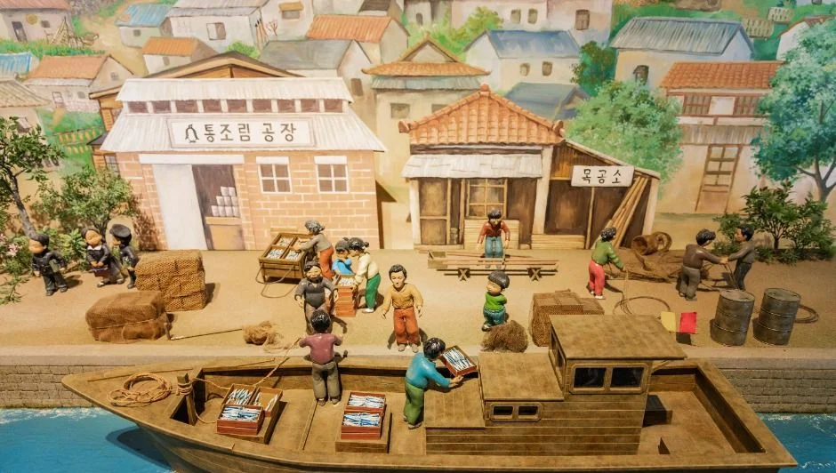
▲ 과메기문화관 구룡포 역사관의 옛 마을 모형. 촬영 시기는 자료에 없다. ⓒ 한국관광공사 · 공공누리 제1유형
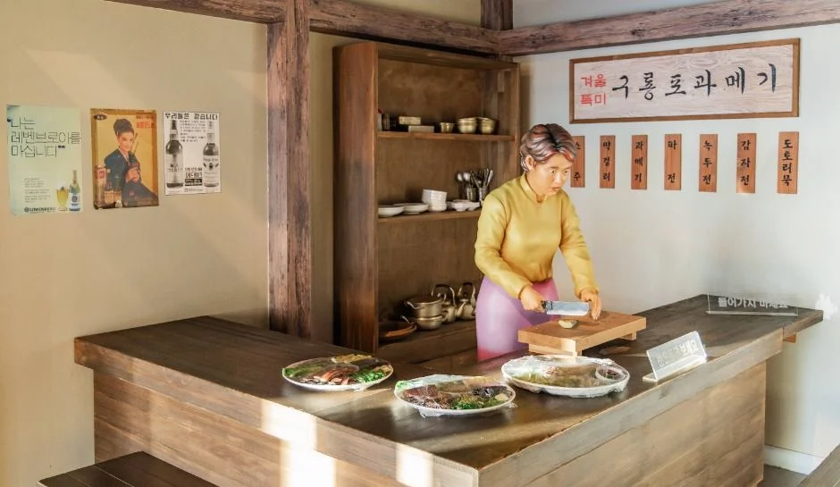
▲ 과메기문화관 전시의 과메기 가게 모형. 실제 가게가 아니라 전시물이다. ⓒ 한국관광공사 · 공공누리 제1유형
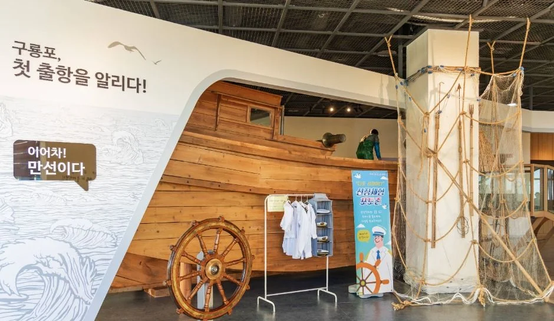
▲ 과메기문화관 구룡포 역사관의 첫 출항 전시. 촬영 시기는 자료에 없다. ⓒ 한국관광공사 · 공공누리 제1유형
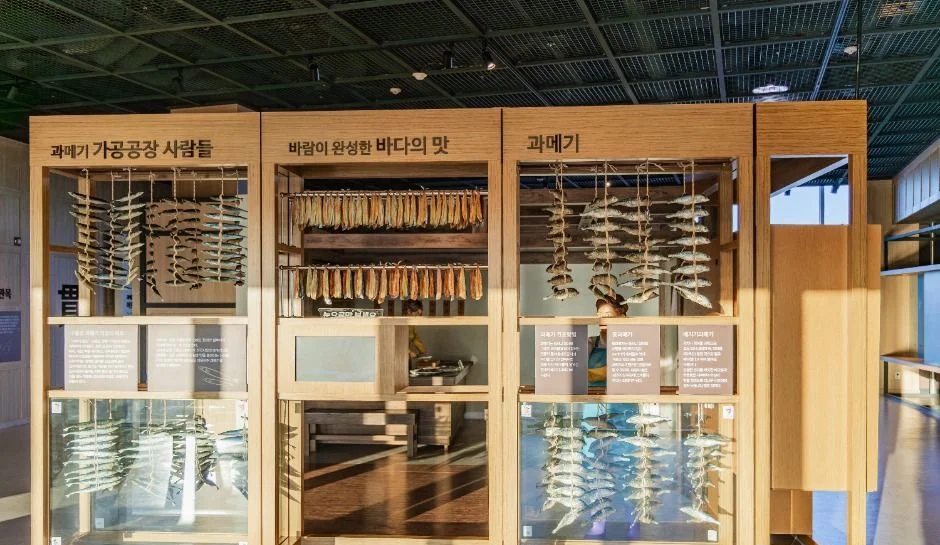
▲ 과메기 가공 과정을 소개하는 전시 진열장. ⓒ 한국관광공사 · 공공누리 제1유형
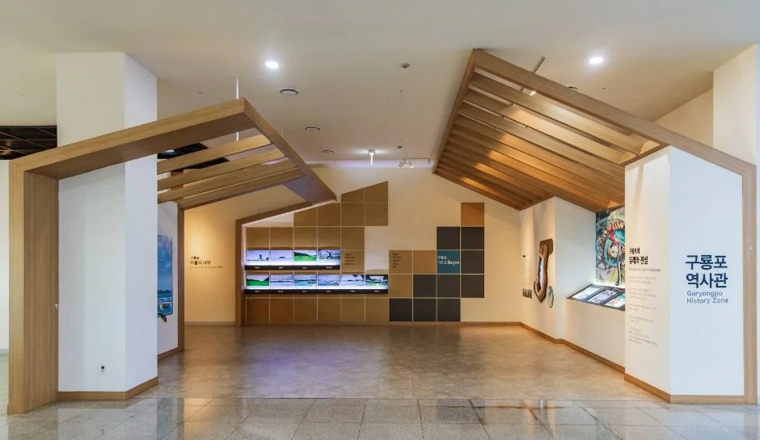
▲ 과메기문화관 구룡포 역사관 입구 쪽 전시장. ⓒ 한국관광공사 · 공공누리 제1유형
먹는 법은 한국관광공사 기사 기준으로 머리에서 꼬리 방향으로 얇은 껍질을 벗긴 뒤 초고추장이나 쌈장에 찍어 생미역, 쪽파, 배추, 마늘과 함께 싸 먹는 방식이 소개된다. 구룡포 음식테마거리는 2014년 문화체육관광부와 한국관광공사가 선정했고, 포항시 게시글은 대게·물회 전문점이 60여 곳이라고 적는다. 개별 식당의 가격과 영업시간은 확인하지 못했다.
7. 호미곶·주상절리로 이어 가기
구룡포 주상절리는 구룡포해수욕장에 연이어 있고, 제1전망대와 제2전망대는 30m 안팎으로 가깝다. 한국관광공사 정보상 상시 개방·연중무휴이며 주차 가능, 문의는 포항시 관광안내소 054-270-5837이다. 제1전망대에서는 구룡포해수욕장 전체가 내려다보이고 주변에 포토존도 있다.
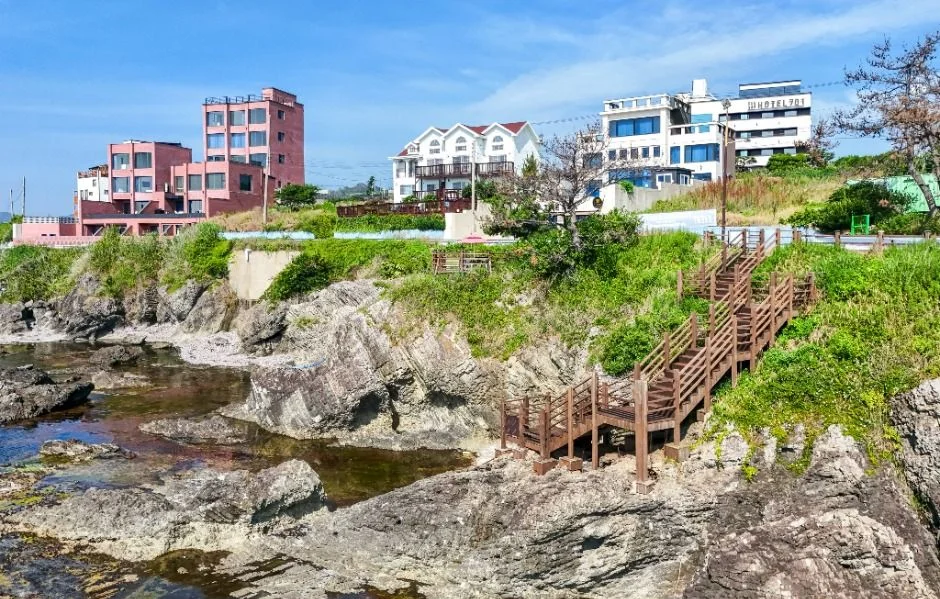
▲ 구룡포 주상절리 사진 묶음의 해안 계단. 촬영 시기는 자료에 없다. ⓒ 한국관광공사 · 공공누리 제1유형
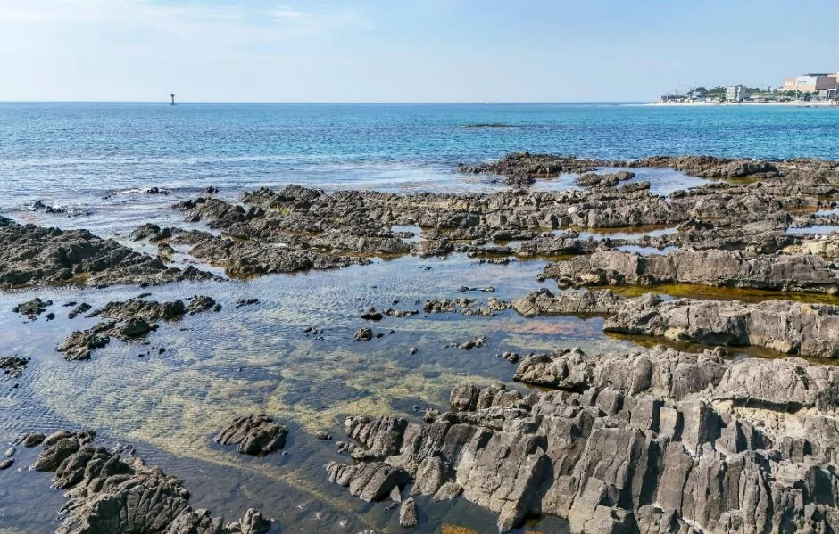
▲ 구룡포 주상절리 사진 묶음의 해안 바위. 촬영 시기는 자료에 없다. ⓒ 한국관광공사 · 공공누리 제1유형
호미곶은 구룡포에서 해안 경로로 이어지는 코스다. 호미곶 해맞이광장은 한국관광공사 정보상 상시 개방·연중무휴, 주차 가능이며 상생의 손 광장과 등대박물관 요금·전망대는 영덕 블루로드에서 호미곶까지 기사에서 따로 다뤘다. 여기서는 호미곶 내용을 반복하지 않는다. 구룡포에서 호미곶까지의 정확한 이동 시간은 확인하지 못했다.
북쪽 포항 내륙 코스가 궁금하다면 포항 내연산 12폭포 가을 가이드를, 남쪽 경주 방향 해안길은 경주 문무대왕릉에서 울산 대왕암까지 31번 국도 기사를 참고할 만하다.
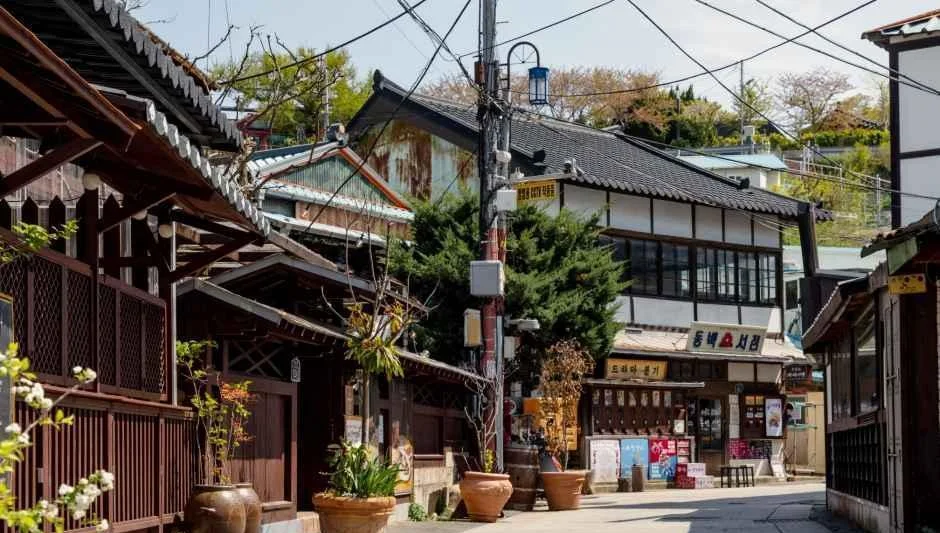
▲ 가옥거리의 또 다른 골목. 촬영 시기는 자료에 없다. ⓒ 한국관광공사 · 공공누리 제1유형
8. 정리
구룡포 일본인 가옥거리는 상시 개방이지만 근대역사관은 포항시 안내상 2026년 11월까지 휴관이다. 일본식 목조 건물 47개가 남아 있고, 공원으로 오르는 가파른 돌계단과 비석, 금~일 저녁 미디어아트가 볼거리다. 과메기는 제철이 11월 말~2월이지만 2025년에는 10월 20일에 첫 출하가 있었다.
근대역사관 재개관일, 계단 수, 가옥거리 주차면 수·요금, 올해 과메기 첫 출하일과 가격은 확인하지 못했다. 이 글은 2026년 10월 21일 기준이므로 방문 전 포항시와 해당 시설에 한 번 더 확인하자.